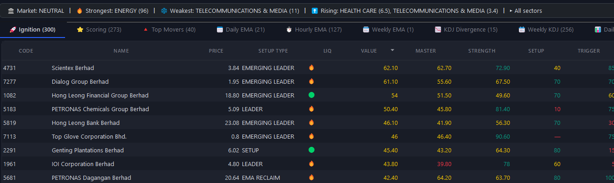
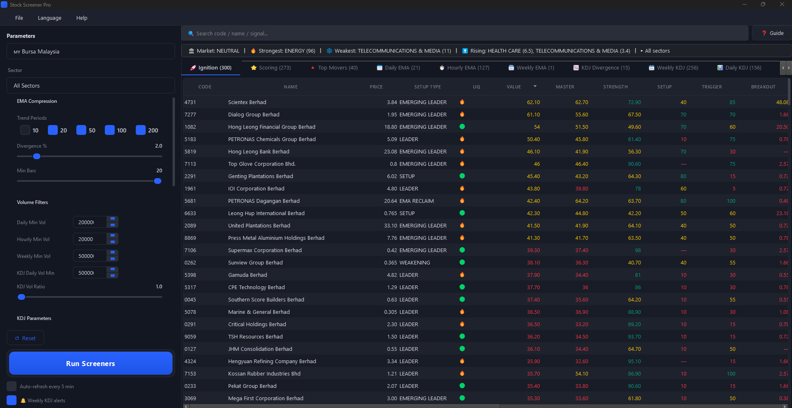
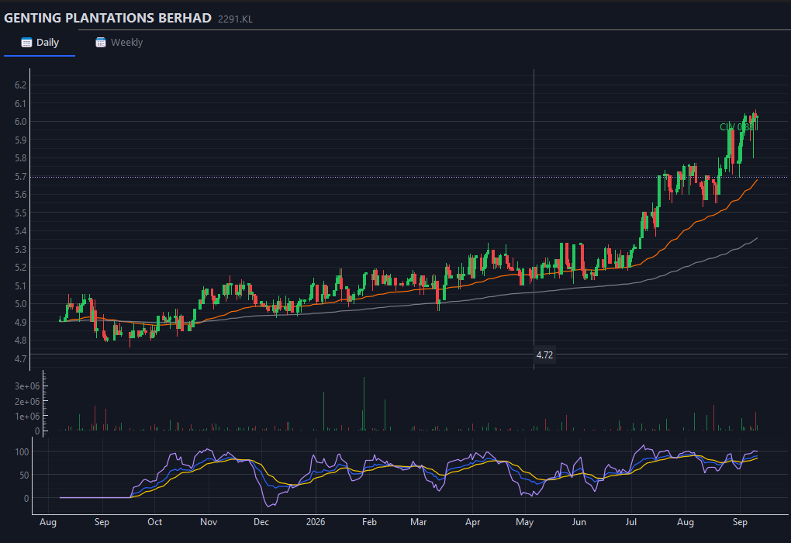
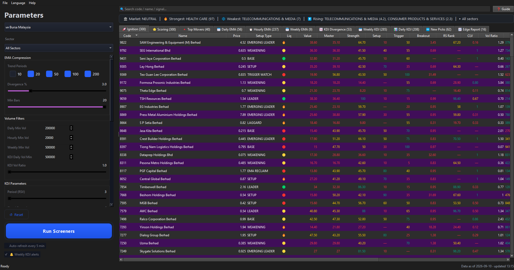

From 1,000+ stocks down to the few worth charting.
Every row carries the reason it was selected — relative strength, sector context, structure and risk/reward, in plain language. You decide what deserves a chart.
It doesn't tell you what to buy. It tells you where to look.

Click for the full windowActual interface screenshot · Bursa Malaysia · the app UI can be switched between English, Malay and Chinese
By the time everyone is talking about it, the move is over.
The breakout hits the news feed after the risk/reward has already compressed. The edge lives earlier — in the quiet structure a stock builds before it expands.
Chase what has already moved
You see it on the news, in a group chat, on the gainers list — then you buy. Price has left your cost area, the stop has to sit far away, and the risk/reward is at its worst.
See it while it is still quiet
Rank the whole market by relative strength, then keep the names building a base: volume drying up, higher lows, a firm close. You get the list before the breakout, so the stop sits under the structure.
From the whole market to a list you can finish reading.
Four steps, one click, over thousands of stocks.
Scan the market
Daily, weekly and hourly data for every listed name.
Rank by strength
Relative strength against the market and its own sector.
Detect the setup
Base quality, volume dry-up, higher lows, closing strength.
Prepare the trade
Measured-move target and invalidation — a real risk/reward.
Eight screeners, two boards, one signal journal.
Run it once a day and read it at a glance. The app fetches and caches its own data locally, and can re-run every 5 minutes on a timer.
A pre-breakout radar, not a watchlist.
Relative strength against every other stock, the official Bursa sector map, session-aware closing strength, and 12 setup labels — from TRIGGER WATCH to BREAKOUT. Every signal is written to a journal you can check later.
| CODE | NAME | PRICE | SETUP TYPE | MASTER | STRENGTH | SETUP |
|---|---|---|---|---|---|---|
| 4731 | Scientex Berhad | 3.84 | EMERGING LEADER | 62.10 | 72.90 | 40 |
| 7277 | Dialog Group Berhad | 1.95 | EMERGING LEADER | 61.10 | 67.50 | 70 |
| 1082 | Hong Leong Financial | 18.80 | EMERGING LEADER | 54 | 49.60 | 70 |
| 2291 | Genting Plantations | 6.02 | SETUP | 45.40 | 64.30 | 80 |
| 1961 | IOI Corporation | 4.80 | LEADER | 43.80 | 78 | 60 |
Two questions, asked separately.
Most screeners merge structure and trend into one number. Here a stock can be building a base while its trend column reads “below EMA200 · weak” — you see the setup and the risk, never one masking the other.
Not a yes/no gate.
“Exclude falling EMA60” removes only genuinely falling trends and keeps flat ones, so early bases are not cut. It applies to every screener tab (Top Movers is exempt), and every row shows its own EMA60 state.
What the number actually means.
No look-ahead. Every calculation uses only bars that had already closed - the engine never reads the future. A Yahoo bar with a null close is dropped, not filled in, and suspensions or gaps are handled by aligned dates and the last two valid prices, so a halted stock cannot poison an indicator.
Big volume is not automatically good. Effort is compared with result: heavy volume that closes flat and leaves a long upper wick is read as potential supply - distribution, not accumulation - and one high-volume bar never carries a signal on its own.
Leadership you can read. Relative strength is measured against the market and against the stock's own sector, with an RS rank and its 20/60-day change. A strong sector does not add points to a stock that is lagging it; the row says so instead.
Also in the box. Live search and sector filter, CSV export of any tab, cancel and retry mid-run, auto-refresh, a weekly KDJ golden-cross tray alert, and a daily/weekly chart behind every row.
Double-click a result, and the chart you already have opens.
Double-click any row and the symbol loads in TradingView Desktop - in the SAME tab when linked mode is on, so reviewing thirty names does not leave thirty tabs behind. Ctrl+double-click opens the built-in chart instead (EMA 60/200, volume, KDJ, pivots). Not running or not installed? It falls back to a new tab or that built-in chart. Linked mode uses TradingView's local interface and needs a one-time setup; it is a bonus, never a requirement.
Bursa's own sectors, not borrowed tags.
The official sector map covers 1,006 Bursa stocks and replaces third-party tags, so plantation names like IOI, KLK, SD Guthrie and TSH are no longer mislabelled as consumer. Sector strength is readable at a glance.
Every row opens a chart.
Candlesticks with EMA 60 and EMA 200, volume, KDJ and pivot resistance — double-click to open, with zoom, pan, crosshair and D/W period switching.
Two new pools: the leaders, and the names near their highs
KDJ parameters actually apply now
Period (RSV) and Signal Smooth used to be read, saved and then ignored - every KDJ computation hard-coded 26/5, so moving them changed nothing. They now drive the KDJ Divergence, Weekly KDJ, Daily KDJ and Scoring screeners, the tray alert and the chart, all from one setting. The default stays 26/5.
Only leaders (RS rank 80+)
Ignition keeps only names in the top fifth of relative strength. Measured on Bursa 2019-2026: 64 names a day instead of 265, and the share that runs +20% within 20 days rises from 6.4% to 8.4% — at the cost of a weaker median (-1.10% vs -0.58%). This is the momentum pool.
Only near the 52-week high (within 5%)
Keeps only names trading within 5% of their 52-week high. Same measurement: 35 names a day, average 20-day return +1.43% instead of +0.16%, and the worst 5% shallows from -20.9% to -14.4%. This is the lower-risk pool.
Both are OFF until you switch them on
They are pool definitions, not scoring: Value / Master / Strength and the ranking are untouched, and the Ignition tab tells you what the smaller list was bought WITH.
We withdrew a number
An earlier figure said these pools won 51.2% of the time. It was wrong — a unit slip made one condition always true. The corrected table is published in full, because a number you cannot reproduce is not evidence.
The actual product, not a concept render.
Below is the working Ignition tab and chart — Bursa Malaysia data, ranked, with the reason behind every score.

Click for the full window
No vendor claims. No made-up win rates.
We will not quote a backtest number we cannot prove. The app records every signal it fires and lets you measure the edge on your own market — Phase-1 vs random vs the index. If it is real, you will see it.
Every signal, dated — including the ones that went nowhere.
This is the same journal the app writes on your own machine: what fired, when, and what the stock did afterwards. Nothing is edited after the fact.
| Group | n | Median 5-day | Closed higher |
|---|---|---|---|
| RS rank 80+ | 621 | +0.41% | 50% |
| RS rank below 40 | 488 | −0.17% | 33% |
Same five-day window for both groups, same dates. A rank is a ranking, not a promise — plenty of high-RS signals still fell. Each row is regenerated from the journal file, not from memory.

A log is not a promise: past signals do not guarantee future results. Every number above is regenerated from the journal file itself.
Not a prediction engine — a charting workflow
It narrows 1,000+ stocks down to a shortlist worth charting. It does not predict which stock will explode — and as a portfolio signal the ranking is worthless: measured on Bursa 2019–2026 (146,049 observations, 161 signal dates) its average excess return versus the market is about zero. As a filter it does work: the top 5% by relative strength holds about 1.6× more stocks that go on to run +30% or more, and that held in 6 of 7 years. Even so the list covers only about 1 in 25 of the stocks that later run. It saves you hours; it does not make the decision for you.
The TradingView link is a bonus, not a requirement: it needs a one-time setup, and the app works without it (new tab) and without TradingView at all (built-in chart). Data is for reference only — not investment advice.
What one real day looked like
On 28 Aug 2026 the screener ranked 609 Bursa stocks. Ten trading days later, here is how that whole list did — everything that ranked, not a selection of winners.
A rank is a ranking, not a promise: two thirds of that list did not close higher. Selected by the rule, reported as it fell — which is why you get a shortlist to look at, not a list to buy.
Why a stock is on the list
Every row carries its own reasons, so you are never asked to trust a single mystery score.
- Relative strength — how the stock is doing against the whole market and against its own sector.
- Setup / Trigger — the structure being built (base quality, volume dry-up, higher lows) and whether it is close to firing.
- Closing strength (CLV) — where the close sat inside the day's range, gated so a barely-moving day cannot score high.
- Risk / reward — measured-move target against the invalidation level, so you can see whether it is even worth opening.
The first buyer’s verdict.
One buyer’s experience, published in their own words — not a performance claim. We do not write testimonials.
“Spend a month testing this new AI Stock Screener for both Bursa & US markets, and I’m genuinely impressed! It tracks market leaders (出头股) in real-time and identifies early ignition points (起爆点) before the big move happens.”
Whether you’re a day trader or a weekly/swing trader, this tool ABLE saves so much time (减少很多做功课的时间). Even on busy workdays, I only need 5 minutes around 4 PM to scan for Buy Today Sell Tomorrow (BTST) momentum. For weekly trades, I just do my screening at night to catch multi-day setups and queue GTD (Good-Till-Date) orders for the week ahead—no need to stare at the screen (盯盘) the whole day!
The author is a senior Stock Remisier with 15 years of market experience, so all the features—like the built-in scoring system, KDJ alerts, and Relative Strength—are super practical for real trading.
Compared to pricey platforms like Chart Nexus or expensive TradingView custom setups (which easily cost thousands a year), this one is high 性价比 and worth every ringgit for beginners intermediate expert traders. for a stock screener tutor, recommended it.

Pay once. Keep it.
No subscription, no ads, no data fees.
Rises to RM199 on 1 Jan 2027 · early buyers keep their licence
Everything included — Ignition v2, the signal journal, all screeners, charts, alerts and three markets. One machine per code, offline activation.
- Bursa · US · Shanghai
- Ignition v2 pre-breakout radar
- All 8 screeners
- Chart drill-down + pivots
- Alerts and auto-refresh
- Signal journal + backtest
- Offline activation
- Lifetime updates
Message the seller on WhatsApp. Your activation code is delivered after purchase.
Before you download.
Do I need Python or any setup?
No — the installer bundles everything (Python, libraries, data sources). Just run the .exe.
Is this a subscription?
No. One-time purchase, lifetime license, offline activation, one machine per code.
What data does it use?
Yahoo Finance (Bursa + US) and AkShare (Shanghai) — free sources. Data is fetched when you run a screen and cached on your machine; it is not a paid real-time feed.
How does the EMA60 filter work?
The sidebar has an “Exclude falling EMA60” checkbox. It removes only stocks whose EMA60 is genuinely falling — measured as the EMA60 travel over 10 bars in the stock own ATR20 (below −0.30 ATR = falling). Flat EMA60s are kept, because flat means unconfirmed rather than bearish, and so are stocks with too little history. It applies to every screener tab; Top Movers is exempt because it is a market snapshot.
Can one code be used on two computers?
No — each code is bound to one machine. If you change computers, contact the seller for a replacement.
Windows says the file is unsafe?
Click More info → Run anyway. The build is unsigned (normal for small software); it is safe. Restore it from quarantine if your antivirus blocks it.
Stop chasing. Start screening.
Download Stock Screener Pro and find the setup before the breakout.